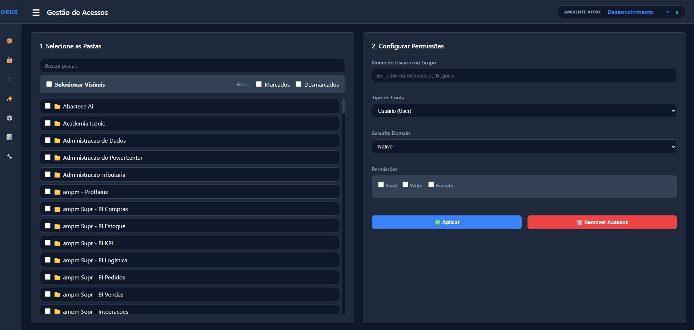
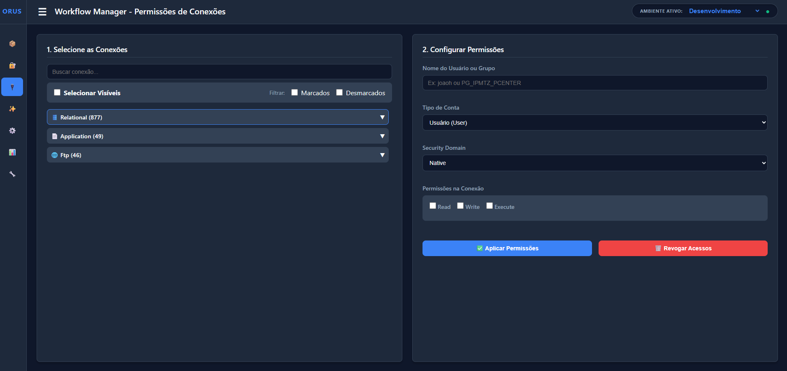
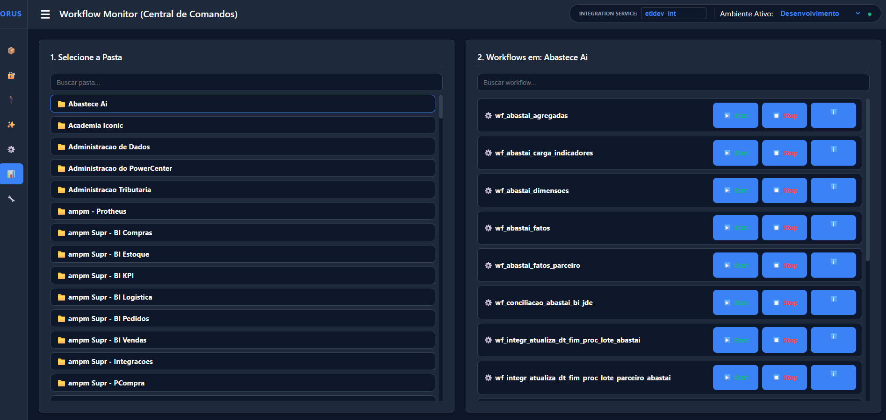
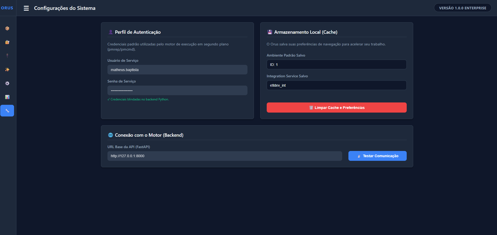

Orus
Plataforma de automação integrada via API para gestão de acessos, conexões e permissões em massa no Informatica PowerCenter.

O Desafio
A administração e a governança de ambientes Informatica PowerCenter lidavam com um grande gargalo: a execução de atividades operacionais repetitivas. Antes da implementação do Orus, a concessão de acessos era realizada manualmente, exigindo a configuração individual de usuários, grupos e permissões em diversos objetos do ambiente.
Esse processo manual consumia aproximadamente 30 minutos por solicitação de provisionamento e, pela natureza repetitiva da tarefa, estava altamente sujeito a erros operacionais e inconsistências de segurança.
A Solução: Plataforma Orus
O Orus foi desenvolvido para centralizar essas operações administrativas em uma interface única, eliminando tarefas manuais e permitindo a execução de ações em massa de forma completamente automatizada através de integrações com APIs (CLI/pmrep).
Principais Funcionalidades
- Gestão Automatizada de Acessos: Atribuição de permissões de forma ágil e segura em objetos específicos do PowerCenter.
- Provisionamento em Massa: Criação e configuração de usuários em lote, reduzindo o tempo de setup de contas.
- Gerenciamento de Conexões: Criação, edição e administração de conexões do ambiente ETL diretamente pela plataforma.
- Administração de Folders: Criação e gestão padronizada de pastas e objetos do PowerCenter.
- Auditoria e Rastreabilidade: Registro completo das operações executadas para garantir a governança e padronização.
Resultados Alcançados
- Redução de Tempo: O tempo de provisionamento de acessos caiu drasticamente de 30 minutos para apenas 2 minutos.
- Eficiência Operacional: Ganho superior a 93% na eficiência das demandas administrativas.
- Qualidade e Segurança: Redução significativa de erros manuais, garantindo maior governança, rastreabilidade e padronização dos processos administrativos e de segurança do ambiente ETL.
Interface da Aplicação
Abaixo estão algumas visualizações das funcionalidades da Plataforma Orus.



Código em Destaque
O trecho abaixo demonstra o método assign_permission da classe PmrepService, parte do motor Python por trás do Orus. Ele ilustra a chamada via subprocesso aos comandos pmrep do Informatica PowerCenter, definindo a segurança e os privilégios dos usuários ou grupos de forma transparente e capturando o retorno em tempo real.
import subprocess
def assign_permission(self, object_type, object_name, name, is_group, security_domain, permissions):
env, cwd = self._get_env_and_cwd()
target_type = "g" if is_group else "u"
cmd = [
self.executable, "assignpermission",
"-o", object_type,
"-n", object_name,
"-t", target_type,
"-p", name,
"-s", security_domain,
"-p", permissions
]
# Ajuste dinâmico se a permissão vier em branco
if not permissions:
cmd = cmd[:-2]
try:
si = subprocess.STARTUPINFO()
si.dwFlags |= subprocess.STARTF_USESHOWWINDOW
result = subprocess.run(
cmd, capture_output=True, text=True,
encoding='cp1252', errors='ignore', startupinfo=si, env=env, cwd=cwd
)
success = result.returncode == 0
output = result.stdout.strip() if success else result.stderr.strip()
return success, output
except Exception as e:
return False, str(e)